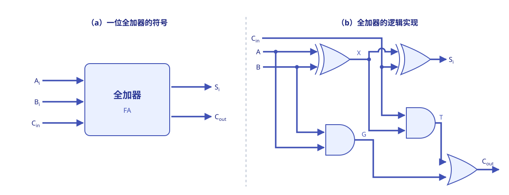
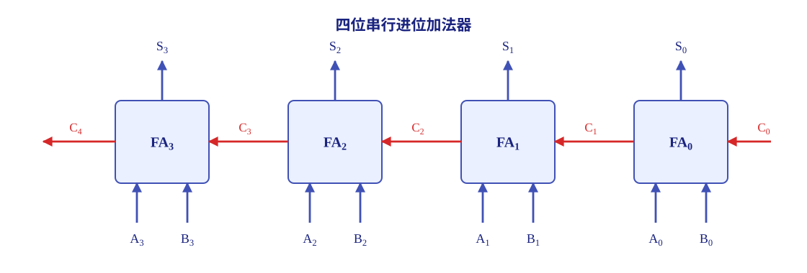
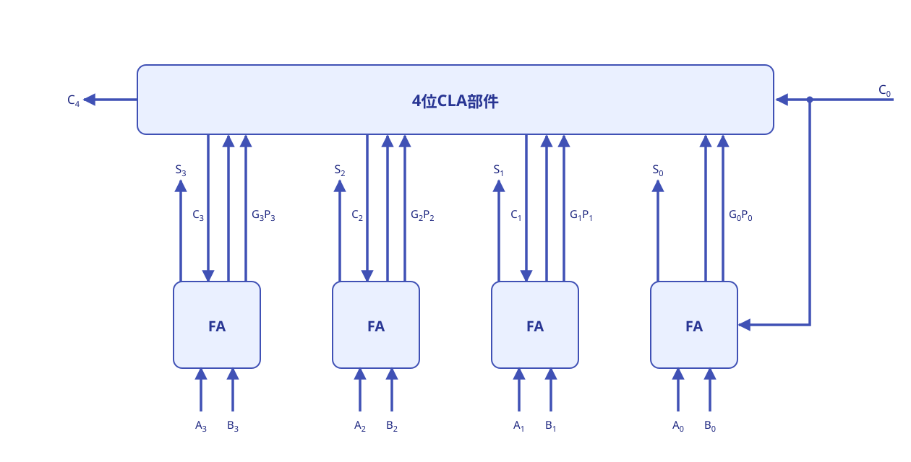
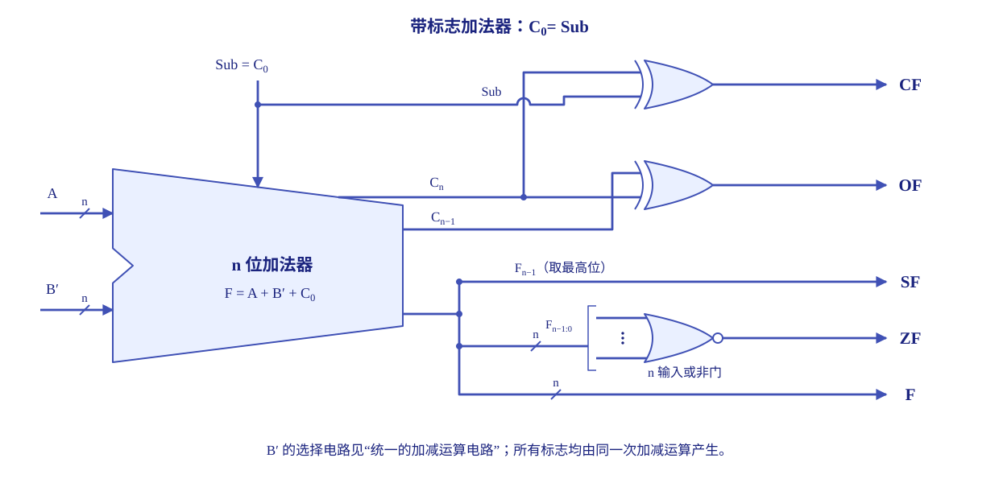
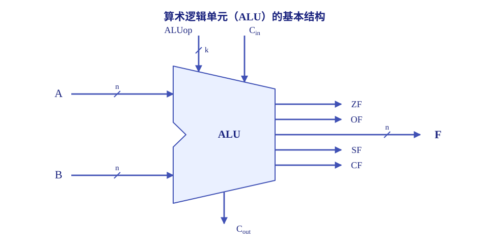
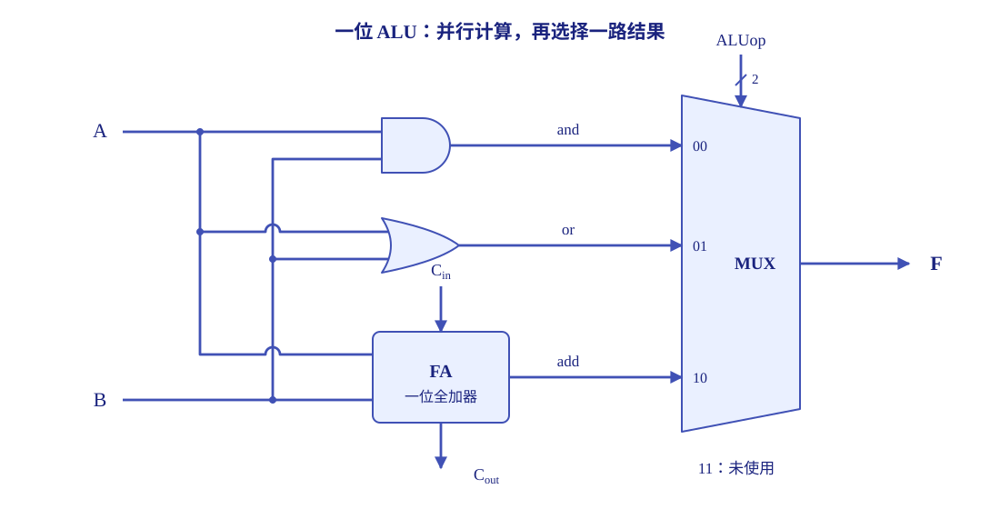
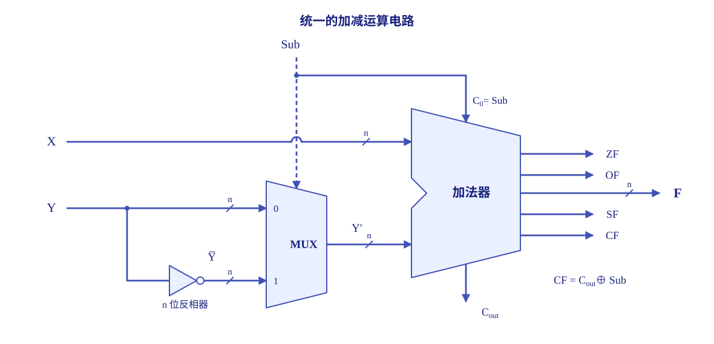
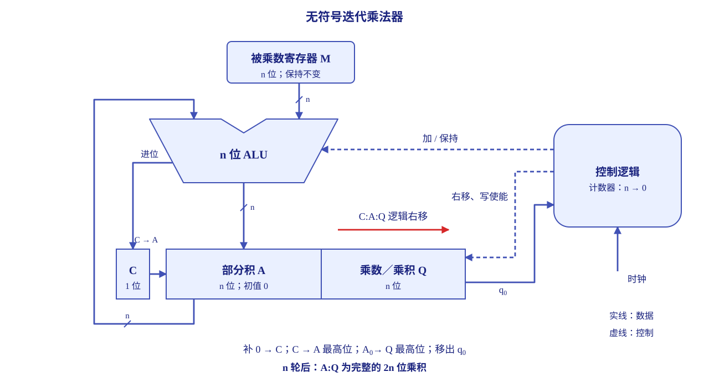
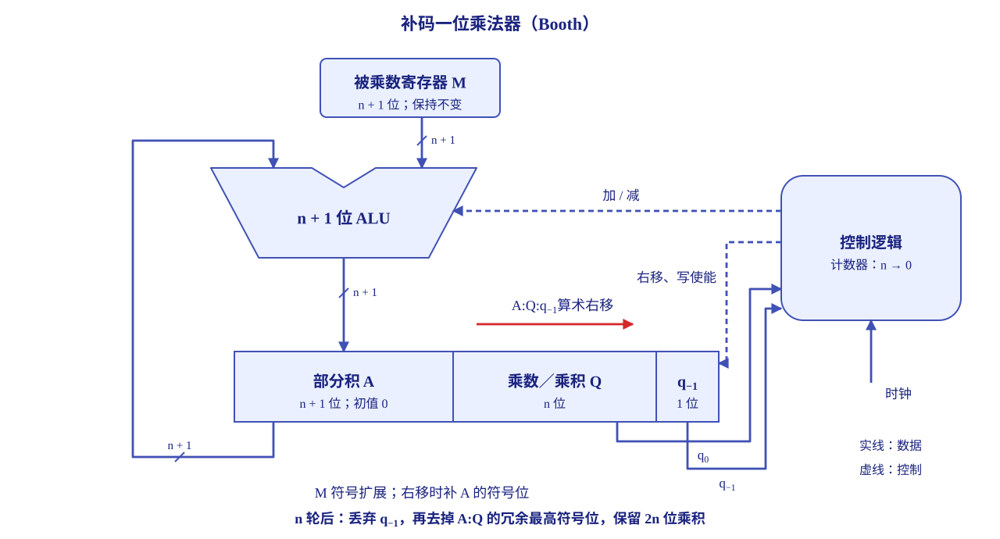
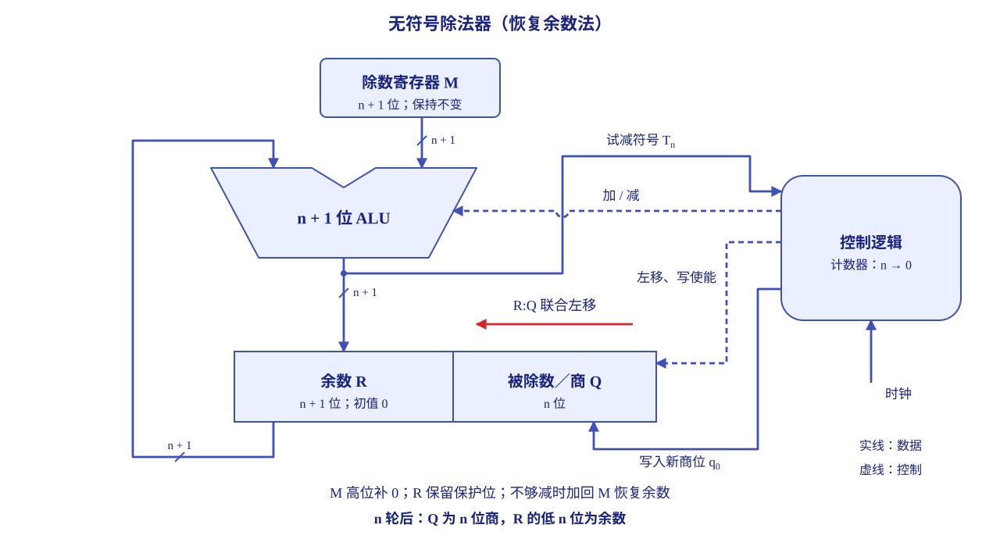

数据的表示与运算¶
约 14155 个字 22 行代码 10 张图片 预计阅读时间 47 分钟
计算机保存的是有限长度的二进制位串。理解一个数，需要先确定编码、位宽和小数点位置；理解一次运算，则要继续追踪电路怎样处理这些位，以及结果是否超出表示范围。下面先讨论数制、编码与数值表示，再看数据怎样存入内存，最后从加法器出发分析定点与浮点运算。
进制¶
计算机系统内部使用 二进制 编码信息：数字、指令、字符和图像最终都以比特序列保存。
为什么会用二进制？
二进制适合硬件实现，主要有三个原因：
- 二进制只有两个状态，只需要使用具有两种稳定物理状态的物理器件即可表示每一位（高电平表示 1 ，低电平表示 0 等），硬件实现成本低。
- 二进制的两个状态恰好对应逻辑值的 true 和 false ，为计算机实现逻辑运算和程序的条件判断提供了直接支持；
- 二进制下的运算规则极为简单（后续介绍），可通过基本的逻辑门电路高效实现各类算术与逻辑操作。
进位计数制¶
“进制”是 进位计数制 的简称。以 \(r\) 为基数，计数时遵循“逢 \(r\) 进一”，数值等于各位数码与位权的乘积之和：
其中 \(r\) 称作基数；\(r^i\) 是第 \(i\) 位的位权；\(K_i\) 是第 \(i\) 位的数码，取值范围为从 \(0\) 到 \(r-1\) 的整数。常见的进位计数制包括十进制、二进制、八进制、 16 进制等。
小数点左边最低位的位权为 \(r^0=1\)，再向左依次为 \(r^1,r^2,\ldots\)；小数点右边则依次为 \(r^{-1},r^{-2},\ldots\)。
| 进制 | 基数 | 可以使用的数码 | 常用后缀 |
|---|---|---|---|
| 二进制 | \(2\) | \(0,1\) | B |
| 八进制 | \(8\) | \(0\sim7\) | O |
| 十进制 | \(10\) | \(0\sim9\) | D ，通常省略 |
| 16 进制 | \(16\) | \(0\sim9\)、A\(\sim\)F | H |
我们也可以用下标标明基数，如 \((1010)_2\)；程序中还常用 0x 作为 16 进制整数的前缀。
进制的转换¶
不同进制之间的转换，可以按下面三种情况处理：
- 任意进制转十进制：按位权展开相加。例如，\((11011.1)_2=16+8+2+1+0.5=27.5\)。
- 二进制与八、 16 进制互转：以小数点为界，整数部分向左、小数部分向右分组；每 3 位对应一位八进制数，每 4 位对应一位 16 进制数。整数高位、小数末尾不足时补 \(0\)。反向转换时，逐个数码展开为相应的 3 位或 4 位二进制即可。
- 十进制转目标进制：整数部分采用除基取余法，余数逆序排列；小数部分采用乘基取整法，整数部分顺序排列，直到小数部分为 \(0\) 或达到要求的精度。八进制和 16 进制之间也可以先经过二进制转换。
以小数点为界进行进制转换
以 \((101101.011)_2\) 为例：
只有从小数点开始分组，才能保证各组的位权与目标进制对应。整数部分的最高位前、小数部分的最低位后补 \(0\) 都不改变数值；在小数点附近随意补 \(0\) 则会改变位权。
再看十进制数 \(13.625\)：整数部分连续除以 \(2\)，所得余数依次为 \(1,0,1,1\)，逆序得到 \(1101\)；小数部分的过程为
顺序取整数部分得到 \(101\)，因此 \((13.625)_{10}=(1101.101)_2\)。
十进制有限小数不一定是二进制有限小数
一个有理数能用有限位二进制精确表示，当且仅当它能写成 \(k/2^t\) 的形式，其中 \(k\) 为整数、\(t\) 为非负整数。换句话说，约分后的分母必须是 \(2\) 的幂。
例如，\(0.625=5/8\) 可以精确写成 \((0.101)_2\)；而 \(0.1=1/10\) 的分母含有因子 \(5\)，二进制小数部分会无限循环，增加有限个二进制位仍不能精确表示它。反过来，任何有限位二进制小数都可以精确地转换为有限位十进制小数。
编码¶
真值与机器数¶
我们平时写的 \(+5\)、\(-5\)，表达的是数本身的实际大小和正负，这个实际数值称为 真值。机器把符号和数值一起编成二进制位串，这样的编码称为 机器数。
同一段位串的真值取决于采用的编码规则。例如，1000 0101 按无符号整数解释是 \(133\)，按原码整数解释是 \(-5\)，按补码整数解释则是 \(-123\)。因此，“看到了哪些位”和“这些位代表什么数”是两个需要分清的问题。
下面统一用 \(n\) 表示机器数的总位数。讨论原码、反码和补码时，最高位用作符号位，其余 \(n-1\) 位为数值位。本部分先按整数说明各类编码；整数与小数的小数点约定见定点整数与定点小数。
原码¶
原码 把最高位单独用于表示符号：\(0\) 表示非负，\(1\) 表示负；其余 \(n-1\) 位保存真值的绝对值。例如，八位原码中：
逗号仅用于分隔符号位与数值位，不占存储位置。原码的对应关系很直观，不过正零和负零会得到不同的编码：
原码的范围关于原点对称，便于直接读出符号和绝对值，也适合将乘除运算的符号处理与数值处理分开。不过，用它实现加减时需要分别判断符号和绝对值大小，硬件处理比较复杂。
反码¶
反码 可以看作从原码得到补码的一个中间形式：非负数的反码与原码相同；负数保留原码的符号位，把数值部分逐位取反，末位不加 \(1\)。因此八位编码中，\(-5\) 的原码为 1000 0101，反码为 1111 1010，在反码上再加 \(1\)，才得到补码 1111 1011。
反码也有两种零：正零为 0000 0000，负零为 1111 1111。它的范围与同位数原码相同，比补码少表示一个最小负数，现代计算机很少用它表示整数。
补码¶
补码 的主要好处是让符号位也参与运算，从而通过加法器统一处理加法和减法。对 \(n\) 位整数，把编码整体看作一个 \(0\sim2^n-1\) 的无符号位串时，补码定义为
这里的 \(2^n\) 称为 模。若两个整数相差 \(2^n\) 的整数倍，它们就具有相同的低 \(n\) 位；也就是说，在模 \(2^n\) 意义下相等。负数的补码取 \(2^n-|x|\)，正是利用这个关系把负数映射到一个非负的编码值。
例如，八位补码中 \(-5\) 的编码为 \(2^8-5=251\)，即 1111 1011；丢弃超出八位的进位后，它与 0000 0101 相加得到全 \(0\)。补码加减的具体过程见补码加减运算。
真值与补码互相转换时，可以使用下面的方法：
- 非负数：补码与原码一致，在数值前补足 \(0\) 即可。
- 负数求补码：先把绝对值写成 \(n\) 位无符号二进制数，再把这 \(n\) 位逐位取反、末位加 \(1\)，保留低 \(n\) 位。
- 负补码求真值：对整个 \(n\) 位位串逐位取反、末位加 \(1\)，把所得位串按无符号数读作绝对值，再加上负号。
这里，对整个 \(n\) 位 取反加一 的方法可以正确处理最小负数的问题。例如，八位补码 1000 0000 取反加一仍为 1000 0000，按无符号数解释得到绝对值 \(128\)，所以原数是 \(-128\)。
也可以直接用位权读出补码真值。若位串为 \(b_{n-1}b_{n-2}\cdots b_0\)，则
最高位的权为负，其余位为正。读取负数补码时，把最高位的负权与其余各位的正权相加，就得到真值。
| 真值或特征 | \(n\) 位补码 |
|---|---|
| \(0\) | 00…0，正零与负零统一 |
| \(-1\) | 11…1 |
| 最大正整数 \(2^{n-1}-1\) | 01…1 |
| 最小负整数 \(-2^{n-1}\) | 10…0 |
补码比相同总位数的原码多表示一个最小负数，且零的编码唯一。
移码¶
移码 将真值统一加上一个固定的偏置值，使整个数值范围平移到非负区间，主要用于表示浮点数的阶码。若字长为 \(n\) 位，并取偏置值 \(2^{n-1}\)，则
以八位移码为例，偏置为 \(128\)，\(-5\) 的移码为 \(123\)，即 0111 1011；\(+5\) 的移码为 \(133\)，即 1000 0101。它有几个方便使用的性质：
- 零的编码唯一，为
10…0。 - 编码全 \(0\) 对应最小真值 \(-2^{n-1}\)，编码全 \(1\) 对应最大真值 \(2^{n-1}-1\)。
- 只需把同位数补码的最高位取反，就能得到这里定义的移码。
- 把移码整体按无符号数比较时，编码越大，真值也越大，因而便于比较阶码。
先确定移码的偏置
偏置为 \(2^{n-1}\) 时，移码与同位数补码仅最高位相反。IEEE 754 浮点格式采用 \(2^{k-1}-1\) 作为 \(k\) 位阶码的偏置，例如八位阶码偏置为 \(127\)；解码时按这一偏置计算，并先识别保留的阶码编码。
编码之间的比较¶
各类编码对应的整数范围、定点小数范围与零的编码，集中列在定点数的表示范围中。
同位数时，非负数的原码、反码、补码相同。比较两个负数时，原码数值部分越大，真值越小；补码和反码的数值部分越大，真值越大。跨正负比较则先判断符号，再按各自规则比较大小。
BCD 码¶
计算机保存的是二进制比特，但一串比特所遵循的解释规则可以不同。除了按二进制位权解释整个数值，也可以按十进制数位分别编码：二进制编码的十进制数（ Binary-Coded Decimal ， BCD ）就是这种表示方式。
例如，采用常见的 8421 BCD 码 时，用 4 位二进制编码一位十进制数码，十进制的 59 编码为 0101 1001。每组只使用 0000 至 1001 表示 0 至 9 ，另外六种组合不作为合法的十进制数码。若把同一串 0101 1001 直接看成一个无符号二进制整数，则得到的是 89。这里的差别来自解释规则： BCD 保留了十进制数位的结构，普通二进制整数按二进制位权整体求值。
整数和小数的表示¶
- 根据小数点位置是否固定，计算机中的数值表示分为定点（ fixed-point ）表示和浮点（ floating-point ）表示两种。
- 根据使用场景的不同，计算机中的数值表示还可以分为无符号和有符号两类。
- 计算机可以表示整数和小数两类数。
定点数的表示¶
定点整数与定点小数¶
定点 的含义是事先约定小数点的位置，而不是在存储器中再存放一个小数点。
| 表示方式 | 小数点的约定位置 | 示意形式 |
|---|---|---|
| 定点整数 | 数值部分最低位之后 | \(s\,b_{n-2}\cdots b_1b_0\boldsymbol{.}\) |
| 定点小数 | 符号位之后、数值部分最高位之前 | \(s\boldsymbol{.}b_{n-2}\cdots b_1b_0\) |
这里的定点小数主要指纯小数。同样一段数值位，在定点整数中最低位的权为 \(1\)，在定点小数中最低位的权为 \(2^{-(n-1)}\)。若编码规则相同，把对应定点整数的真值除以 \(2^{n-1}\)，就得到定点小数的真值。
硬件并不需要在位串里寻找小数点，但解释结果时必须知道这一约定。前面的编码规定了位串如何表示符号和数值，这里的小数点约定则进一步决定各位对应的实际位权。
整数的表示¶
无符号整数 不设符号位，所有位都用于表示非负数值。对 \(n\) 位位串 \(b_{n-1}\cdots b_0\)，其真值为
因为不需要为符号保留一位，相同字长下，无符号整数的最大值大于有符号整数的最大值。例如，八位无符号数从 0000 0000 到 1111 1111，可表示 \(0\sim255\)，适合计数等只涉及非负整数的场合。
有符号整数 需要同时表示正负和数值。原码、反码、补码都可以完成编码，而现代计算机通常采用补码，其优势见前面的编码说明，表示范围见定点数的表示范围。
例如，同为八位编码，补码整数的范围是 \(-128\sim127\)。最高位为 \(1\) 的位串，在无符号解释中仍是较大的非负数，在补码解释中则是负数；究竟采用哪种解释，由数据类型和指令规定，而不是由位串自己决定。
定点数的表示范围¶
| 编码 | \(n\) 位整数的表示范围 | \(n\) 位定点小数的表示范围 | 零的编码 |
|---|---|---|---|
| 原码 | \([-(2^{n-1}-1),\,2^{n-1}-1]\) | \([-(1-2^{-(n-1)}),\,1-2^{-(n-1)}]\) | 两种 |
| 反码 | \([-(2^{n-1}-1),\,2^{n-1}-1]\) | \([-(1-2^{-(n-1)}),\,1-2^{-(n-1)}]\) | 两种 |
| 补码 | \([-2^{n-1},\,2^{n-1}-1]\) | \([-1,\,1-2^{-(n-1)}]\) | 一种 |
| 移码，偏置 \(2^{n-1}\) | \([-2^{n-1},\,2^{n-1}-1]\) | 本节用于整数阶码 | 一种 |
C 语言中的整数类型及类型转换¶
常用整数类型¶
C 语言提供 short（short int）、int、long（long int）等整型；在这些类型前加上 unsigned，就得到对应的无符号类型。它们省略 signed 或 unsigned 时默认为有符号类型。
| 类型 | 常见实现采用的位数 | 补码有符号范围 | 对应无符号范围 |
|---|---|---|---|
short / unsigned short |
\(16\) | \(-32768\sim32767\) | \(0\sim65535\) |
int / unsigned int |
\(32\) | \(-2^{31}\sim2^{31}-1\) | \(0\sim2^{32}-1\) |
long / unsigned long |
由平台实现确定 | 由总位数决定 | 由总位数决定 |
char 也是整数类型，常见实现中占八位。下文统一采用 ** 16 位 short、 32 位 int、有符号数用补码表示** 的模型。
整数转换的实现约定
普通 char 的符号性由实现决定，需要明确符号时应使用 signed char 或 unsigned char。此外，以下内容中的有符号窄化示例采用“保留低位、截去高位”的实现约定；在 C11 中，若源值不能由目标有符号类型表示，结果由实现定义，或者产生由实现定义的信号。可参考 C11 草案 N1570 的 6.2.5、6.3.1.3。
位截断与位扩展¶
类型转换可以写成 (目标类型)<表达式>。整数转换同时受 源类型与目标类型的位宽、符号性 影响：位宽变化可能引起截断或扩展，符号性则决定留下的位串如何解释。
长类型转换为短类型，在采用低位截断的实现中，超出目标字长的高位被丢弃，留下的位串按目标类型解释，这就是位截断。例如：
此时 x 的 32 位编码为 0x00009C40，保留低 16 位后得到 0x9C40，所以 y 的补码真值为 \(40000-2^{16}=-25536\)，这样就发生了语义变化。数值变化是发生在窄化转换这一步的，这并非运算溢出（而是由于解释机制），原值 \(40000\) 也在 32 位 int 的范围内，因此此类转换不会触发任何异常或错误报告。
短类型转换为长类型，高位需要填充，这就是位扩展。常见的两种方式是：
- 零扩展：源类型为无符号数时，高位补 \(0\)。
- 符号扩展：源类型为补码有符号数时，高位重复原来的符号位。非负数补 \(0\)，负数补 \(1\)。
当目标类型能容纳源值时，数值保持不变。例如：
| 变量 | 位模式 | 真值 | 转换过程 |
|---|---|---|---|
a |
0xFFFB |
\(-5\) | 16 位补码 |
b |
0xFFFFFFFB |
\(-5\) | 从 a 符号扩展 |
u |
0xFFFB |
\(65531\) | 同位宽，转为无符号解释 |
v |
0x0000FFFB |
\(65531\) | 从 u 零扩展 |
扩展方式依据 源类型：位串 0xFFFB 从 a（有符号）扩展时补 \(1\)，从 u（无符号）扩展时补 \(0\)。
负数被强制转换为更宽的无符号类型
这种情况实际上可以看成两步：先按符号扩展转换为有符号类型，然后利用相同字长的符号性转换得到最后结果（有关规则请见下一节）。
换句话说，这种情况下应该按目标位宽的模规则确定非负结果，这是由 C 标准定义的行为；前面的分析也可以看出，实际上这个结果并不与“扩展方式依据源类型”冲突。
相同字长下改变符号性¶
在补码定义下，相同字长的有符号数与无符号数互相转换，可以表现为位模式不变、解释方式改变。例如，上面 a 和 u 的编码完全相同，但前者的最高位具有补码的负权，后者的所有位都具有正权，所以真值相差 \(2^{16}\)。
对 \(n\) 位无符号目标类型，转换所得值与原值模 \(2^n\) 同余，并落在 \(0\sim2^n-1\) 内。因此，负数 \(-5\) 转为 16 位无符号数得到 \(2^{16}-5=65531\)；转为 32 位无符号数则得到 \(2^{32}-5=4294967291\)。
反向转换时，若无符号值不大于目标有符号类型的最大值，数值保持不变；超出该范围时，结果由 C 的实现约定决定（正如前面的提示所说）。
浮点数的表示¶
前面的定点数把小数点固定在约定的位置，而浮点数会把表示数值所需的比例因子一起保存下来，让小数点的位置可以随阶码变化。一般可以写成：
其中，\(s\) 决定正负；\(M\) 是非负的尾数，用来保存有效数字；\(E\) 是阶码所表示的指数真值；\(R\) 是约定的基数，通常为 \(2\)，也可以采用 \(4\) 或 \(16\)。存储时不必为每个数再保存一次基数。
阶码位数主要决定表示范围，尾数位数主要决定有效精度。例如，一种 32 位格式可以采用 1 位符号、7 位阶码和 24 位小数尾数，阶码偏置为 \(64\)。尾数的小数点位置、阶码偏置与字段分配共同确定这种格式的数值含义；后面的 IEEE 754 采用另一组规定。
同一个非零数可能有不止一种写法，例如：
为了尽可能利用有限的尾数位，需要约定一种规格化形式。若一般二进制格式把原码尾数的小数点放在最高数值位之前，规格化要求最高数值位为 \(1\)，即 \(\frac12\le M<1\)。规格化条件随尾数编码和小数点位置而定； IEEE 754 采用下面的 \(1.f\) 形式。
表示范围与表示精度
相同总位数下，浮点数把部分位分配给阶码，以覆盖更广的数量级。\(n\) 位存储一共只有 \(2^n\) 种位模式，其中一部分还用于特殊值。
定点数在选定尺度后，相邻值的间隔固定；浮点数的间隔随数量级变化。比较精度时，应给出定点尺度与所讨论的数值区间。有限位二进制小数的精确表示条件见进制的转换。
IEEE 754 标准的浮点数¶
IEEE 754 的二进制浮点格式把存储位划分为符号字段 \(s\)、阶码字段 \(e\) 和尾数字段 \(f\)。这里用 \(E\) 表示指数真值，用 \(e\) 表示存储的无符号阶码编码。
| 格式 | 总位数 | 符号位 | 阶码位数 | 尾数字段位数 | 规格化有效位数 \(p\) | 阶码偏置 \(B\) |
|---|---|---|---|---|---|---|
| 单精度 | 32 | 1 | 8 | 23 | 24 | 127 |
| 双精度 | 64 | 1 | 11 | 52 | 53 | 1023 |
对于规格化数，真值为：
二进制规格化尾数的小数点前总是 \(1\)，因此不必把这个 \(1\) 实际存下来，这就是隐藏位。\(f\) 只保存小数点后的部分，所以 23 位尾数字段可以提供 24 位二进制有效数字， 52 位尾数字段可以提供 53 位。
若阶码字段有 \(q\) 位， IEEE 754 的偏置为 \(B=2^{q-1}-1\)，与前面普通移码采用的 \(2^{q-1}\) 不同。它还保留了全 \(0\)、全 \(1\) 阶码用于特殊编码，因此规格化数的阶码范围是：
- 单精度：\(1\le e\le254\)，即 \(-126\le E\le127\)。
- 双精度：\(1\le e\le2046\)，即 \(-1022\le E\le1023\)。
阶码采用偏置表示后，在规格化范围内可以直接按无符号编码比较指数大小，这也方便后面加减运算时进行对阶。
负数的 IEEE 754 单精度编码
以 \(-6.5\) 为例，先写出二进制规格化形式：
因此符号位 \(s=1\)，阶码字段 \(e=2+127=129=(10000001)_2\)；隐藏小数点前的 \(1\) 后，尾数字段为 101，在后面补 \(0\) 至 23 位：
按四位一组重新划分，得到 C0D00000H。反向解码时，先分出三个字段，再恢复隐藏位、减去阶码偏置，最后按浮点公式求值。
阶码全 \(0\)、全 \(1\) 时使用特殊编码规则。单、双精度都可以按下表判断：
| 阶码字段 \(e\) | 尾数字段 \(f\) | 表示内容 | 真值或含义 |
|---|---|---|---|
| 全 \(0\) | 全 \(0\) | 有符号零 | \(+0\) 或 \(-0\)，由 \(s\) 决定 |
| 全 \(0\) | 非全 \(0\) | 非规格化数 | \((-1)^s(0.f)_2\times2^{1-B}\) |
| 既非全 \(0\)，也非全 \(1\) | 任意 | 规格化数 | \((-1)^s(1.f)_2\times2^{e-B}\) |
| 全 \(1\) | 全 \(0\) | 无穷大 | \(+\infty\) 或 \(-\infty\)，由 \(s\) 决定 |
| 全 \(1\) | 非全 \(0\) | 非数 NaN | 无有效的实数值，如无效运算的结果 |
非规格化数也称次正规数。它与规格化数有两个区别：隐藏位改为 \(0\)，指数固定为 \(1-B\)。因此，单精度非规格化数的指数仍是 \(-126\)，双精度仍是 \(-1022\)，而不是直接把阶码字段 \(e=0\) 代入 \(e-B\)。
引入非规格化数，可以在 \(0\) 与最小规格化正数之间再表示一批很小的数。数值继续减小时，尾数前面的零越来越多，可用的有效数字逐渐减少，这就是渐进下溢的基本想法。
\(+0\) 和 \(-0\) 的编码不同，通常的数值比较把它们看作相等。\(+\infty\) 大于所有有限数，\(-\infty\) 小于所有有限数； NaN 表示未得到有效数值的情况。判断特殊编码时，先检查阶码，再检查尾数：全 \(1\) 阶码配全 \(0\) 尾数表示无穷大，配非零尾数表示 NaN。
最小规格化正数取最小非零阶码和全 \(0\) 尾数；最大有限正数取最大可用阶码和全 \(1\) 尾数。非规格化数中，只有尾数字段的最低位为 \(1\) 时，得到最小的可表示正数。
| 边界 | 单精度 | 双精度 |
|---|---|---|
| 最小规格化正数 | \(2^{-126}\) | \(2^{-1022}\) |
| 最大有限正数 | \((2-2^{-23})2^{127}\) | \((2-2^{-52})2^{1023}\) |
| 最小非规格化正数 | \(2^{-149}\) | \(2^{-1074}\) |
| 最大非规格化正数 | \((1-2^{-23})2^{-126}\) | \((1-2^{-52})2^{-1022}\) |
有限负数的范围关于零对称。最小正数取自非规格化范围，最小规格化正数则位于规格化范围的边界；无穷大单独使用特殊编码。
对于指数真值同为 \(E\) 的规格化数，尾数字段最低位相差 \(1\) 时，两个数的间隔为：
因此，数量级增大一倍，相邻数的间隔也会增大一倍。以单精度为例，在 \([1,2)\) 内间隔为 \(2^{-23}\)，在 \([2,4)\) 内为 \(2^{-22}\)；在 \([2^{24},2^{25})\) 内间隔已经是 \(2\)，所以不能表示这个区间中的每个整数。这说明浮点数的绝对间距随数量级增大，有效位数则保持不变；它不是在整个数轴上均匀分布的。
C 语言中的浮点数类型¶
本节采用以下数据模型：int 是 32 位补码整数，float 使用 IEEE 754 binary32 ，double 使用 binary64。long double 的宽度与格式由具体实现规定。
在这个模型下，float 有 24 位二进制有效数字，double 有 53 位。转换能否保持原值，取决于 目标类型的表示范围与有效精度：范围决定数值能否容纳，精度决定有效数字能否完整保留。
| 转换 | 能否精确保持原值 | 需要关注的问题 |
|---|---|---|
int → float |
不一定 | 范围足够，但某些整数需要超过 24 位有效数字，转换时可能舍入 |
int → double |
能 | 32 位 int 的全部数值都在 double 的范围和有效精度之内 |
float → double |
有限数能 | double 能精确保存每个有限 float 的原值；保留该值已有的数值与误差 |
double → float |
不一定 | 有效位减少可能造成舍入；范围缩小还可能导致上溢或进入非规格化范围 |
float / double → int |
只有可表示的整数值能 | 舍去小数部分，向零截断；整数部分越界属于未定义行为，见下方说明 |
float 可以精确表示 \([-2^{24},2^{24}]\) 内的所有整数。更大的整数是否精确，取决于它是否落在相应数量级的可表示数上：例如，\(2^{24}+2\) 可以精确表示，\(2^{24}+1\) 则需要舍入。
浮点数转整数：向零截断与越界
对有限浮点数转整数， C 先丢弃小数部分、向零截断。例如，(int)3.9 为 3，(int)-3.9 为 -3；若整数部分超出目标类型范围，则行为未定义。这与整数窄化转换的规则分别处理。
混合运算还需要分清运算之前的转换和结果保存时的转换。常见情况下，int 与 float 运算会先将整数转换为 float；float 与 double 运算会先将 float 转为 double。但赋值给更宽的类型，并不能自动修复前面已经产生的精度损失：
int i = 16777217; // 2^24 + 1
float f = (float)i; // 在默认就近舍入下变成 16777216
double d = (double)f; // 精确保存 f，仍然是 16777216
double exact = (double)i; // 可以精确保存 16777217
上例中，d 接收的是已经舍入过的 f，因此仍为 16777216 ；exact 直接接收原整数，保留 16777217。提高后续存储精度，可以保留现有值，已经丢失的低位则需要回到原始数据重新计算。
数据的宽度和存储¶
数据的宽度与单位¶
位（ bit ，记作 b ）表示一个二进制位，是最小的信息单位；通常所说的字节（ byte ，记作 B ）包含 8 位，是常见的基本存储与寻址单位。容量单位中的大写 B 与小写 b 不能混用。
采用二进制容量约定时，\(1\text{ KiB}=2^{10}\text{ B}\)、\(1\text{ MiB}=2^{20}\text{ B}\)、\(1\text{ GiB}=2^{30}\text{ B}\)；十进制的 \(1\text{ kB}=10^3\text{ B}\)、\(1\text{ MB}=10^6\text{ B}\)、\(1\text{ GB}=10^9\text{ B}\) 用于按十进制标称的容量，以及频率、传输速率和 FLOPS 等。具体约定见计算机系统概述。
字（ word ）是体系结构约定的数据组织单位，长度依架构而定；字长通常指 CPU 整数数据通路的宽度，与通用寄存器宽度通常相同。例如， x86 把 16 位称为字、32 位称为双字，而“32 位机器”描述的是机器字长。指令、地址、整数类型和浮点数的宽度分别由相应规则规定。
大端方式与小端方式¶
在按字节编址的内存中，每个地址对应一个字节，多字节数据占据一组连续地址。大小端讨论的是：一个数据内部的各个字节，按什么顺序放进这些地址。
以四字节数 12345678H 为例，12H 是最高有效字节（ MSB ），78H 是最低有效字节（ LSB ）。这两个名称由字节对数值的贡献决定，与图上画在左边还是右边无关。
- 大端方式（ big endian ）：低地址保存最高有效字节，高地址保存最低有效字节。
- 小端方式（ little endian ）：低地址保存最低有效字节，高地址保存最高有效字节。
假设这个数从地址 1000H 开始存储：
| 存储方式 | 1000H |
1001H |
1002H |
1003H |
|---|---|---|---|---|
| 大端 | 12H |
34H |
56H |
78H |
| 小端 | 78H |
56H |
34H |
12H |
大小端规定 多字节数据内部的字节顺序，每个字节的位序保持不变。恢复小端数值时，从最高有效字节到最低有效字节重新组合。机器代码需要先识别各字段边界，再分别解释其中的多字节字段。
边界对齐¶
边界对齐要求数据的起始地址是其对齐值的整数倍。如果某个数据要求按 \(a\) 字节对齐，则起始地址 \(A\) 应满足：
在一个采用 32 位字、每次按对齐的 4 字节边界访问的简化模型中，字节可以放在任意地址，半字通常按 2 字节对齐，字通常按 4 字节对齐。一个 4 字节字若从地址 \(4\) 开始，落在同一组访问范围内；若从地址 \(3\) 开始，则横跨 \([0,3]\) 与 \([4,7]\) 两组，需要分别取得两边的数据再拼接。
在上述模型中，按边界对齐能减少跨访问块的拼接。具体访存次数由数据宽度、总线宽度和存储系统共同决定。
为了让后续成员满足对齐要求，编译器可能插入填充字节。它们占空间，但不属于程序声明的有效成员数据，是一种用存储空间换取访问便利的做法。
结构体的对齐与填充¶
一种常见的结构体布局规则是：
- 每个成员的起始地址满足自身的对齐要求。
- 结构体整体满足其成员中的最大对齐要求。
- 结构体总大小是这个整体对齐值的整数倍；末尾不够时也要补齐，保证数组中的下一结构体仍能正确对齐。
成员顺序与结构体填充
具体对齐值依编译器、目标平台及相关设置而定。下面假设 char、short、int 的大小与对齐值分别为 1、2、4 字节，并采用上述规则：
| 结构体 | a 的偏移 |
b 的偏移 |
c 的偏移 |
填充位置 | 总大小 |
|---|---|---|---|---|---|
A |
0～3 | 4 | 6～7 | 偏移 5 | 8 B |
B |
4～7 | 0 | 8～9 | 偏移 1～3、10～11 | 12 B |
两者的成员类型相同，声明顺序却改变了填充字节的数量：编译器按声明顺序布局成员，将每个成员的起始偏移补齐到其对齐边界，最后将结构体总长度补齐到整体对齐值的倍数。
边界对齐决定成员的偏移与填充，大小端决定多字节成员内部的字节排列，两者共同确定结构体的内存布局。
运算方法和运算电路¶
基本运算部件¶
计算机中的各种基本运算最终都要落实到组合逻辑电路上实现，复杂运算还需要控制逻辑与寄存器来组织多步操作，而加法又是一切算术运算的基础。所以我们在这里介绍的部件都以加法为核心功能。
运算器除了 ALU ，还包含移位器、通用寄存器组和保存运算状态的寄存器。下面先从一个二进制位的相加出发，再把它扩展为能够处理多位数据的部件。在逻辑表达式中，相邻变量的乘积表示“与”，\(+\) 表示“或”，\(\oplus\) 表示“异或”；这里的逻辑“或”需要与算术加法区分开。
一位全加器¶
只考虑两个一位二进制数 \(A_i\)、\(B_i\) 相加、不考虑低位进位的部件称为半加器：其本位和为 \(A_i \oplus B_i\)，向高位的进位为 \(A_iB_i\)。
而在多位加法中，第 \(i\) 位还必须加上从低位传上来的进位。能同时处理“两个本位加数 + 低位进位”的部件就是全加器（ Full Adder ， FA ）：输入为 \(A_i\)、\(B_i\) 与进位输入 \(C_{\mathrm{in}}\)，输出为本位和 \(S_i\) 与进位输出 \(C_{\mathrm{out}}\)。
全加器的真值表如下：
| \(A_i\) | \(B_i\) | \(C_{\mathrm{in}}\) | \(S_i\) | \(C_{\mathrm{out}}\) |
|---|---|---|---|---|
| 0 | 0 | 0 | 0 | 0 |
| 0 | 0 | 1 | 1 | 0 |
| 0 | 1 | 0 | 1 | 0 |
| 0 | 1 | 1 | 0 | 1 |
| 1 | 0 | 0 | 1 | 0 |
| 1 | 0 | 1 | 0 | 1 |
| 1 | 1 | 0 | 0 | 1 |
| 1 | 1 | 1 | 1 | 1 |
由真值表可写出全加器的逻辑表达式：
进位表达式由两项构成，恰好对应产生进位的两条途径：
- \(A_iB_i\)：两个加数本位都为 \(1\)，本位直接产生进位；
- \((A_i \oplus B_i)C_{\mathrm{in}}\)：两个加数本位恰有一个为 \(1\)，把低位传来的进位传递到高位。
这两种途径分别对应后面并行进位加法器中的进位生成函数与进位传递函数。

串行进位加法器¶
把 \(n\) 个全加器首尾相接——每一位的进位输出直接作为相邻高位的进位输入——就得到 \(n\) 位串行进位加法器。图中以 4 位为例：最低位的输入进位记为 \(C_0\)，各位产生的进位依次为 \(C_1\)、\(C_2\)、\(C_3\)，最高位向外的进位为 \(C_4\)。

串行进位加法器结构简单、元件少，但高位需要等待低位逐级传来的进位。设一位全加器的进位传递延迟为 \(2T\)（\(T\) 为一级门延迟，对应一个与门加一个或门），则 \(n\) 位的最坏进位链延迟约为 \(2nT\)，与位数成正比。它适合位数较少、速度要求较低的场合。
并行进位加法器¶
既然进位表达式 \(C_{\mathrm{out}} = A_iB_i + (A_i\oplus B_i)C_{\mathrm{in}}\) 本身只有两项，不妨把它当作递推式逐级代入展开。为此定义
并约定第 \(i\) 位的进位输入为 \(C_i\)、进位输出为 \(C_{i+1}\)（最低位的输入进位为 \(C_0\)），则
把递推式逐级代入展开，每位进位都化成了 \(G\)、\(P\) 与 \(C_0\) 的组合（以 4 位为例）：
展开后可以看到：各级进位都不再依赖低位的进位传递，只要 \(G_i\)、\(P_i\) 和 \(C_0\) 就绪，就可以由专门的进位逻辑同时（并行）算出，这就是并行进位加法器，又称先行进位／超前进位加法器（ Carry Look-Ahead Adder ， CLA ）。同时，本位和也可由传递函数直接得到：\(S_i = P_i \oplus C_i\)。
代价是：位数越多，各级展开式的项数和每一项需要的输入数都会增加（\(C_i\) 的展开式有 \(i+1\) 项），电路越复杂。因此实际中常采用分组并行进位：组内并行进位，组间再并行（两级先行进位）或串行，在速度与成本之间折中。

带标志加法器¶
加法器不仅要给出结果，还要提供判断结果特征的信息。在 \(n\) 位加法器上增加标志位生成逻辑，即得到带标志加法器，一般产生四个标志：
| 标志 | 名称 | 含义 |
|---|---|---|
| CF | 进位／借位标志 | 加法时取最高位进位 \(C_n\)；减法时取 \(\overline{C_n}\) 表示借位 |
| OF | 溢出标志 | \(OF = C_n \oplus C_{n-1}\)，只对有符号数（补码）有意义 |
| SF | 符号标志 | 取结果的最高位，\(SF = F_{n-1}\) |
| ZF | 零标志 | 结果各位全为 \(0\) 时置 \(1\) |
- CF （ Carry Flag ）：无符号数运算的进位／借位标志。加法时取最高位的进位 \(C_n\)；减法用补码实现，\(A-B\) 通过 \(A+\overline B+1\) 完成，若最高位向外产生进位（\(C_n=1\)）说明 \(A\ge B\)、没有借位，因此若约定 CF 在发生借位时置 \(1\)，减法时就应取 \(CF=\overline{C_n}\)。以 \(Sub=0\) 表示加法、\(Sub=1\) 表示减法，则可以统一写成 \(CF=C_n\oplus Sub\)。
- OF （ Overflow Flag ）：有符号数（补码）的溢出标志。当最高位进位与次高位进位不同（\(OF = C_n \oplus C_{n-1}\)）时发生溢出，即结果超出了补码能表示的数值范围。
- SF （ Sign Flag ）：符号标志，直接取结果的最高位 \(F_{n-1}\)，将保存的 \(n\) 位结果按补码解释时，结果为负则 \(SF=1\)；发生溢出时，准确数学结果的符号还需结合 OF 判断。
- ZF （ Zero Flag ）：零标志，结果的各位全为 \(0\) 时置 \(1\)（可用结果各位“或非”得到）。
这些标志是条件转移等指令进行判断的依据，通常与运算结果一起送入程序状态字寄存器。

算术逻辑单元¶
算术逻辑单元（ Arithmetic Logic Unit ， ALU ）是 CPU 中执行运算的核心部件，本质上是一个组合逻辑电路。它以带标志加法器为核心，再加上逻辑运算部件（与、或、非、异或等）和移位部件等：
- 输入端：两个 \(n\) 位操作数 \(A\)、\(B\)（以及可能的进位输入），外加来自控制器的操作控制信号；
- 输出端：运算结果 \(F\) 以及标志位 CF、OF、SF、ZF。
一种常见的实现方式是，操作控制信号同时作用于各个运算部件，各部件并行算出候选结果，最后由多路选择器选出所需的那一路作为输出。因此， ALU 一般只完成加、减、与、或、非、异或、移位等基本运算；乘、除等较复杂的运算通常通过多次调用 ALU 并配合移位、加法迭代完成，或交由专门的乘除部件实现，这里我们后面介绍。
若操作控制信号有 \(k\) 位，就最多能够区分 \(2^k\) 种操作。例如，要在“与、或、加法”三种操作中选择一种，至少需要 2 位控制信号。

下面把一位 ALU 展开：与门、或门和全加器分别产生候选结果，再由多路选择器选择输出；这里的进位输出来自全加器。

两位 ALUop 分别用 00、01、10 选择与、或、加法， 11 在此例中未使用。
定点数的移位运算¶
二进制数每向左移动一位，各位的位权就扩大为原来的两倍；每向右移动一位，各位的位权就缩小为原来的一半。因此，在位宽允许的情况下，移位可以配合加减法实现乘除运算。不过，寄存器的位数是固定的，移出的位会丢失，左移要考虑溢出，右移要考虑精度损失。
逻辑移位¶
逻辑移位把操作数看作无符号数，空出来的位置都补 \(0\)：
- 逻辑左移：最高位移出，最低位补 \(0\)。左移一位且没有移出 \(1\) 时，结果等于原数乘以 \(2\)；若移出了 \(1\)，则完整结果已经超出当前位宽。
- 逻辑右移：最低位移出，最高位补 \(0\)。对于无符号整数，右移一位等于除以 \(2\) 后舍去小数部分。
例如， 4 位无符号数 0011 表示 \(3\)，左移一位得到 0110，即 \(6\)；右移一位得到 0001，即 \(1\)。而 1010 表示 \(10\)，左移一位只能留下 0100，其值为 \(4\)，所以已经不能表示真实结果 \(20\)。
算术移位¶
算术移位需要保留有符号数的数值含义。这里讨论计算机中常用的补码算术移位，符号位也在整个字长内一起移动。
| 操作 | 移位与补位规则 | 数值上的含义 |
|---|---|---|
| 算术左移一位 | 最高位移出，最低位补 \(0\)，位操作与逻辑左移相同 | 没有溢出时，相当于乘以 \(2\) |
| 算术右移一位 | 最低位移出，最高位补原符号位 | 相当于除以 \(2\) 后向负无穷方向取整 |
对于左移一位，可以观察原来的最高两位：若两位不同，则新符号位与原符号位不同，说明溢出。例如， 4 位补码 0011（\(3\)）左移得到 0110（\(6\)），没有溢出；0101（\(5\)）左移得到 1010（\(-6\)），则发生溢出。负数也是如此：1101（\(-3\)）左移得到 1010（\(-6\)）没有溢出，而 1011（\(-5\)）左移得到 0110（\(6\)）就溢出了。
连续左移多位时，应检查中间各步。例如，0101 连续左移两位得到 0100，虽然初末符号相同，第一步已溢出，最终保存值为 \(4\)，而准确结果为 \(5\times4=20\)。
算术右移补符号位，是为了维持负数在高位的符号扩展。例如， 4 位补码 1011（\(-5\)）右移一位得到 1101（\(-3\)）；此时 \(-5/2=-2.5\)，结果向负无穷取整为 \(-3\)。若被移出的最低位为 \(1\)，就损失了精度；若它为 \(0\)，则右移一位可以精确完成除以 \(2\)。
移位与整数除法的舍入方向
补码算术右移向负无穷取整，有符号整数除法的商向零截断。例如，\(-5\) 右移一位得到 \(-3\)，而 \(-5\div2\) 的商为 \(-2\)。用移位实现除法时，需要按目标舍入方向修正。
定点数的加减运算¶
补码加减运算¶
补码的好处在运算时就很明显了：符号位和数值位可以一起参与加法，减法也可以转化成加法。设操作数和结果的字长均为 \(n\) 位，则
这里的运算仍遵循二进制的“逢二进一”，只是最终只保留低 \(n\) 位，最高位向外的进位不写入结果。如果数学结果没有超出 \(n\) 位补码的表示范围，留下的就是正确结果的补码；如果超出了范围，电路仍会给出一个 \(n\) 位结果，但它已经不能表示正确的真值，需要进行溢出判别。
例如，用 4 位补码计算 \(5+2\) 和 \(5-2\)：
其中 1110 是 \(-2\) 的补码，括号中的进位被舍去，结果分别为 \(7\) 和 \(3\)。这两次结果都在补码范围内；是否发生有符号溢出，应检查准确数学结果能否由当前位宽表示。
统一的加减运算电路¶
为了让同一个加法器同时完成加法和减法，可以引入控制信号 \(Sub\)。令 \(Y'\) 为实际送入加法器的第二个操作数，则每一位满足
因而整个部件计算
- 当 \(Sub=0\) 时，\(Y'=Y\)、\(C_0=0\)，得到 \(F=(X+Y)\bmod 2^n\)。
- 当 \(Sub=1\) 时，\(Y'=\overline Y\)、\(C_0=1\)，得到 \(F=(X+\overline Y+1)\bmod 2^n=(X-Y)\bmod 2^n\)。
也可以像教材中的电路一样，用反相器生成 \(\overline Y\)，再由多路选择器在 \(Y\) 和 \(\overline Y\) 之间选择。两种画法表达的是同一件事：减法时对第二个操作数按位取反，并把最低位进位输入置为 \(1\)。

减数 \(B\) 为最小负数时，电路仍直接执行 \(A+\overline B+1\)，保留低 \(n\) 位，并据原操作数符号或实际进位判断最终减法是否溢出。此时 \([-B]_{\mathrm{补}}\) 表示模 \(2^n\) 的位串，而数学值 \(-B\) 需要更宽的有符号表示。
这套电路既能处理无符号数，也能处理补码有符号数。电路只计算位串，数值的解释由使用它的指令决定。例如， 4 位运算 0000 - 0001 得到 1111：按补码解释是正确的 \(-1\)；按无符号数解释则是 \(15\)，说明发生了借位。各个标志的定义见带标志加法器，按无符号解释检查 CF ，按有符号解释检查 OF。
补码加减运算的溢出判别¶
补码加法只有同号相加才可能溢出，补码减法只有异号相减才可能溢出。下面三种方法只是观察同一次运算的不同位置，判定结果是一致的。
第一种方法：比较操作数与结果的符号。 设原操作数的符号位分别为 \(a_s\)、\(b_s\)，结果的符号位为 \(f_s\)，则
加法可以理解为“两个正数相加却得到负数，或两个负数相加却得到非负数”；减法则是“正数减负数却得到负数，或负数减正数却得到非负数”。式中的加号表示逻辑或，\(V=1\) 表示溢出。
例如， 4 位补码 0111 + 0011 = 1010，即 \(7+3\) 得到一个按补码解释为 \(-6\) 的结果，属于正溢出；1001 + 1101 = (1)0110，即 \(-7+(-3)\) 得到 \(6\)，属于负溢出。
第二种方法：比较符号位的进位输入和进位输出。 两者不同时溢出，即 \(OF=C_n\oplus C_{n-1}\)。最高位向外的进位 \(C_n\) 用于无符号进位判断；有符号溢出使用这两个进位的异或。
第三种方法：使用双符号位。 这种补码也被称为变形补码。先将两个操作数各自扩展一位符号位，再按补码规则进行加减，并检查结果的两个符号位。设高、低符号位依次为 \(s_1s_0\)：
| \(s_1s_0\) | 含义 |
|---|---|
00 |
结果非负，没有溢出 |
01 |
正溢出，即结果超过原位宽的最大正数 |
10 |
负溢出，即结果小于原位宽的最小负数 |
11 |
结果为负，没有溢出 |
所以 \(V=s_1\oplus s_0\)。例如，将上面的 \(7+3\) 改用双符号位书写，得到 00 111 + 00 011 = 01 010，两个符号位为 01，说明结果对原来的 4 位补码而言正溢出。高符号位仍能指示数学结果的符号，但低符号位已经发生变化。
利用减法结果比较大小¶
比较两数不必真的把差保存下来，只要让加减电路执行一次 \(A-B\)，观察对应的标志位即可。
| 大小关系 | 将 \(A,B\) 解释为无符号数 | 将 \(A,B\) 解释为补码有符号数 |
|---|---|---|
| \(A=B\) | \(ZF=1\) | \(ZF=1\) |
| \(A>B\) | \(ZF=0\) 且 \(CF=0\) | \(ZF=0\) 且 \(SF\oplus OF=0\) |
| \(A<B\) | \(CF=1\) | \(SF\oplus OF=1\) |
对于无符号数，够不够减就直接决定了大小关系。对于有符号数，如果没有溢出，可以直接看差的符号；一旦溢出，保存下来的差的符号就与数学结果相反，需要用 OF 修正。
例如，在 4 位补码下比较 \(7\) 与 \(-3\)，电路执行 0111 - 1101 = 1010。虽然结果最高位为 \(1\)，但这次运算有正溢出，故 \(SF\oplus OF=1\oplus 1=0\)，结合 \(ZF=0\)，可以判断 \(7>-3\)。
原码的加减运算¶
原码需要把符号和数值分开处理，所以不能像补码那样把整个编码直接相加。加法遵循“同号求和，异号求差”的原则：
- 两数同号时，将绝对值相加，结果取共同的符号；若数值部分容纳不下这个和，则溢出。
- 两数异号时，先比较绝对值，再用较大的绝对值减去较小的绝对值，结果取绝对值较大者的符号；若绝对值相等，则结果为 \(0\)。
减法则先改变减数的符号，再按上述原码加法处理。例如，\((-5)-(-2)\) 先改写为 \((-5)+(+2)\)，两数异号，数值部分计算 \(5-2=3\)，结果取负号，所以得到 \(-3\)。
这就需要额外判断符号、比较绝对值，并选择加法还是减法，控制逻辑比补码加减法复杂，这也是计算机普遍用补码完成整数加减运算的原因。
定点数的乘除运算¶
原码乘法与无符号乘法¶
原码乘法可以把符号和数值分开处理：乘积的符号位等于两个乘数符号位的异或，数值部分则是两个绝对值的乘积。因此，先掌握无符号数相乘，就能完成原码乘法的数值计算。
设 \(n\) 位乘数为 \(Y=\sum_{i=0}^{n-1}y_i2^i\)，则
每个 \(y_i\) 只有 \(0\)、\(1\) 两种取值，所以每个部分积要么是 \(0\)，要么是移到相应位置的 \(X\)。这就是二进制乘法能够分解为“判断乘数位、加法、移位”的原因。两个 \(n\) 位无符号数相乘，完整乘积最多需要 \(2n\) 位。
硬件不必为每个部分积单独准备一个长寄存器。下面采用部分积与乘数联合右移的实现，记寄存器之间的冒号为按高位到低位拼接：
| 部件 | 位宽与初值 | 作用 |
|---|---|---|
| 被乘数寄存器 \(M\) | \(n\) 位，装入 \(X\) | 整个过程中保持不变 |
| 部分积寄存器 \(A\) | \(n\) 位，初值为 \(0\) | 保存乘积逐渐形成的高半部分 |
| 乘数／乘积寄存器 \(Q\) | \(n\) 位，初值为 \(Y\) | 尚未处理的乘数位逐渐被乘积低位替代 |
| 进位位 \(C\) | \(1\) 位，初值为 \(0\) | 保存 \(A+M\) 向高位的进位 |
| 计数器 | 初值为 \(n\) | 控制处理 \(n\) 个乘数位 |

每轮依次完成以下操作：
- 检查 \(Q\) 的最低位 \(q_0\)。若 \(q_0=1\)，计算 \(A+M\)，将低 \(n\) 位写回 \(A\)，进位写入 \(C\)；若 \(q_0=0\)，不进行加法，令 \(C=0\)。
- 将 \(C:A:Q\) 整体逻辑右移一位：\(C\) 移入 \(A\) 的最高位，\(A\) 的最低位移入 \(Q\) 的最高位，原 \(q_0\) 移出，最左端补 \(0\)。这一步之后 \(C\) 为 \(0\)。
- 计数器减 \(1\)，未到 \(0\) 就继续下一轮。最后一轮也要完成右移，然后才结束。
经过 \(n\) 轮，完整的 \(2n\) 位乘积就在 \(A:Q\) 中。加法进位先保存在 \(C\) 中，本轮右移时再进入 \(A\) 的最高位。
联合右移形成完整乘积
例如，计算 4 位无符号数 \(11\times 7\)，初始 \(M=1011\)、\(A=0000\)、\(Q=0111\)：
| 轮次 | 本轮 \(q_0\) | 加法后或不加时的 \(C:A\) | 整体右移后的 \(C:A:Q\) |
|---|---|---|---|
| 1 | 1 | 0:1011 |
0:0101:1011 |
| 2 | 1 | 1:0000 |
0:1000:0101 |
| 3 | 1 | 1:0011 |
0:1001:1010 |
| 4 | 0 | 0:1001 |
0:0100:1101 |
所以乘积为 0100 1101，即 \(77\)。原码数 \((-11)\times(+7)\) 的数值部分也按同样的方法求出，再附上由异或得到的负号即可；这里 4 位是绝对值的位宽，不包含原码的符号位。
得到完整乘积和把乘积截成一个字长，是两个不同的问题。完整的 \(2n\) 位结果可以容纳两个 \(n\) 位无符号数的乘积；若指令只保留低 \(n\) 位，则当高半部分 \(A\ne 0\) 时发生截断溢出。例如，上例完整结果正确，但只保留低 4 位就只剩 1101，已经不能表示 \(77\)。
补码乘法的基本实现¶
补码有符号乘法可以采用 Booth 一位乘法，让符号位和数值位一起参与运算。它与上述迭代乘法器的结构相似，主要区别是控制逻辑允许加法、减法以及不操作，并且联合寄存器执行算术右移。
仍令 \(Q\) 保存 \(n\) 位乘数，在它右侧增设一位 \(q_{-1}\)，初始为 \(0\)；每轮根据 \(q_0q_{-1}\) 决定如何修改部分积 \(A\)：
| \(q_0q_{-1}\) | 对 \(A\) 的操作 |
|---|---|
00 |
不操作 |
01 |
\(A\leftarrow A+M\) |
10 |
\(A\leftarrow A-M\) |
11 |
不操作 |
完成所选操作后，将 \(A:Q:q_{-1}\) 整体算术右移一位，最左端补 \(A\) 的符号位；\(A\) 的最低位进入 \(Q\) 的最高位，原 \(q_0\) 进入 \(q_{-1}\)。如此重复 \(n\) 次，最后一轮也要移位，最终丢弃辅助位 \(q_{-1}\)，得到补码乘积。
这里有一个实现细节：若所有补码操作数都只用 \(n\) 位，最小负数 \(-2^{n-1}\) 取负时无法用 \(n\) 位表示，而控制表中又包含减去被乘数的操作。为了让这个流程覆盖最小负数，可以将 \(M\) 符号扩展为 \(n+1\) 位，并让 \(A\) 也使用 \(n+1\) 位且初值为 \(0\)；\(Q\) 仍为 \(n\) 位，迭代次数仍为 \(n\)。结束后 \(A:Q\) 共 \(2n+1\) 位，最高位是冗余符号扩展位，去掉它就得到所需的 \(2n\) 位完整乘积。

若将完整的补码乘积截成低 \(n\) 位，只有在高 \(n\) 位全部等于低 \(n\) 位的符号位时，才没有截断溢出。例如， 8 位乘积 1111 1010 表示 \(-6\)，高 4 位恰好是低 4 位 1010 的符号扩展，所以 \(-6\) 仍能由 4 位补码表示；而 0000 1010 表示 \(10\)，高 4 位不是低 4 位的符号扩展，截断后就会溢出。
乘法后的溢出状态应按具体乘法指令的约定检查；若程序要求精确结果，可以在检测到溢出后进入错误处理或采用更宽的运算。
乘法的几种实现方式¶
| 实现方式 | 基本思路与特点 |
|---|---|
| 迭代式乘法器 | 用 ALU、移位器、寄存器和控制逻辑，每轮处理一位乘数。若一次加减与一次移位各需一个时钟周期，\(n\) 位乘法约需 \(2n\) 个周期 |
| 阵列乘法器 | 并行生成各个部分积，再由加法器网络求和，以较多硬件换取更短的运算时间；若时钟周期足以容纳整个组合电路延迟，可以在一个周期内完成 |
| 用移位和加减指令实现 | 不依赖专门的乘法器，例如 \(13X=(X\ll 3)+(X\ll 2)+X\)；具体步数取决于乘数的分解和可用指令 |
除法的准备与结果约定¶
整数除法希望得到商 \(q\) 和余数 \(r\)，满足
有符号整数除法的商按向零截断得到，非零余数与被除数同号。例如，\(-13\div 3\) 的商为 \(-4\)，余数为 \(-1\)，因为 \(-13=(-4)\times 3+(-1)\)。
正式开始迭代前，需要先判断特殊情况：
- 首先检查除数是否为 \(0\)。除数为 \(0\) 时不能继续运算，包括 \(0/0\)，都属于除法异常。
- 除数不为 \(0\) 时，若被除数为 \(0\)，或 \(|X|<|Y|\)，则商为 \(0\)、余数为 \(X\)，可以直接结束。
- 其余情况进入移位与试商过程；有符号除法还要关注商能否由指定的位宽表示。
无符号除法与恢复余数法¶
二进制除法和手算长除法相似：从被除数的高位开始，每次带下一位，判断当前部分被除数是否够减。够减就上商 \(1\)，不够减就上商 \(0\)。硬件可以把被除数和最终商复用同一个寄存器，并用另一个寄存器保存部分余数。
对两个 \(n\) 位无符号数相除，令除数非零，初始设置如下：
- 除数寄存器 \(M\) 保存除数，过程中保持不变。
- \(Q\) 为 \(n\) 位，初始保存被除数，迭代中逐步被商替换。
- \(R\) 初值为 \(0\)，保存部分余数；从数值上看，初始的 \(R:Q\) 就是将被除数高位补 \(0\)。
- 计数器初值为 \(n\)，一共生成 \(n\) 位商。
试减是否够减，可以由借位信号判断。下面让 \(R\) 使用 \(n+1\) 位，除数也补 \(0\) 到 \(n+1\) 位：试减前按无符号数理解部分余数；试减后的差落在 \(n+1\) 位补码范围内，因而可用差的符号判断。额外一位保存试减所需的保护信息。

每轮执行：
- 将 \(R:Q\) 整体逻辑左移一位，\(Q\) 的最高位进入 \(R\) 的最低位，\(Q\) 的最低位补 \(0\)，为当前商位留出位置。这相当于长除法中“带下一位”。
- 计算试减 \(T=R-M\)。若 \(T\ge 0\)，说明够减，令 \(R\leftarrow T\)、\(q_0\leftarrow 1\)；若 \(T<0\)，说明不够减，令 \(q_0\leftarrow 0\)，并恢复试减前的 \(R\)。若已经把差写入 \(R\)，恢复操作就是再执行一次 \(R\leftarrow R+M\)。
- 计数器减 \(1\)，未到 \(0\) 就继续。最后一轮完成试减、上商和必要的恢复后直接结束，不再额外移位。
因为不够减时撤销了减法，所以这种方法叫作恢复余数法。每轮结束时都保证 \(0\le R<M\)；完成 \(n\) 轮后，\(Q\) 是商，\(R\) 是余数，\(R\) 的额外保护位可以去掉。
恢复余数法形成商与余数
例如，计算 \(13\div 3\)，取 \(n=4\)，初始 \(R=00000\)、\(Q=1101\)、\(M=00011\)：
| 轮次 | 左移后的 \(R:Q\) | 试减 \(T=R-M\) | 当前商位 | 本轮结束的 \(R:Q\) |
|---|---|---|---|---|
| 1 | 00001:1010 |
11110（\(-2\)） |
0 | 00001:1010 |
| 2 | 00011:0100 |
00000（\(0\)） |
1 | 00000:0101 |
| 3 | 00000:1010 |
11101（\(-3\)） |
0 | 00000:1010 |
| 4 | 00001:0100 |
11110（\(-2\)） |
0 | 00001:0100 |
最终 \(Q=0100\)，即商为 \(4\)；\(R=00001\)，即余数为 \(1\)，满足 \(13=4\times 3+1\)。
这里的两个 \(n\) 位无符号数相除，只要除数非零，商就不超过 \(2^n-1\)，可用 \(n\) 位保存。若被除数宽于 \(n\) 位，还应另外检查商的范围。
若用原码处理有符号除法，可以先对两个数的绝对值使用上述流程，再让商取两数符号位的异或，非零余数取被除数的符号；符号与数值仍是分开处理的。
补码除法的基本实现¶
补码除法让符号位和数值位统一参与运算，硬件组成仍以除数寄存器、余数／商寄存器、ALU、移位与控制逻辑为主。与无符号除法相比，其初始化和试商控制需要考虑符号。
对于 \(n\) 位被除数，先把它符号扩展为 \(2n\) 位，也就是将低 \(n\) 位装入 \(Q\)，高 \(n\) 位的 \(R\) 全部填成被除数的符号位；除数寄存器保存 \(n\) 位除数，计数器设为 \(n\)。若输入本来就是 \(2n\) 位被除数，则直接装入相应的高、低两部分。
随后循环执行联合左移与试商：每轮将 \(R:Q\) 左移一位，控制逻辑根据余数、除数的符号与大小选择加法或减法，确定新商位，并按算法修正余数。其控制比无符号恢复余数法复杂；本节重点是 符号扩展、加减与移位、最终商和余数的位置。
完成运算后，\(Q\) 保存商，\(R\) 保存余数，非零余数与被除数同号。除数为 \(0\) 或商溢出时，硬件需要报告异常，再交由相应的处理程序处理。
对于两个 \(n\) 位补码整数相除，商溢出只有一种情况：
也就是最小负数除以 \(-1\)，数学结果比该位宽能表示的最大正数还大 \(1\)。例如， 4 位补码的 \(-8\div(-1)=8\)，而 4 位补码最大只能表示 \(7\)，因此溢出。
浮点数的加减运算¶
设两个数分别为 \(x=M_x2^{E_x}\)、\(y=M_y2^{E_y}\)，其中正负号暂时计入尾数。只有指数相同，尾数对应的数位才具有相同的权，才能直接相加减。因此，浮点数加减需要依次完成对阶、尾数加减、规格化、舍入和溢出判断。
对阶¶
对阶遵循小阶向大阶看齐的原则。先求阶差，把指数较小的数的尾数向右移动，移动位数等于阶差，并把它的指数增大到与另一数相同。
例如：
右移尾数并增大指数，不改变这个数的实际值。若采用大阶向小阶看齐，就需要左移较大指数的尾数；在固定宽度下，最高有效位可能被移出，因而不适合作为通常的对阶方式。
对于 IEEE 754 规格化数，要先恢复隐藏位，再移动数值部分，符号由单独的逻辑处理。右移后原来的隐藏位也会进入小数部分，空出的高位补 \(0\)。移出的低位应尽量作为附加位保留，参与后面的计算与舍入，而不是每移动一次就直接截断。
非规格化操作数按实际指数 \(1-B\)、尾数 \(0.f\) 参加对阶。
尾数加减¶
对阶之后，对包含附加位的完整尾数进行加减。IEEE 754 把数的符号单独保存，尾数本身表示非负大小，因此可以把这一步理解为：
- 同号相加时，尾数大小相加，结果保留这个符号。
- 异号相加时，较大的尾数减去较小的尾数，结果取绝对值较大者的符号。
- 减法可以通过改变第二个操作数的符号，转化为加法。
教材常把这一步称为“原码尾数加减”。实现时，控制逻辑根据符号和操作类型选择无符号尾数的加法或减法，再生成结果符号，可以复用已有 ALU。
尾数规格化¶
尾数运算后，结果可能不再是 \(1.f\) 的形式，需要通过移动尾数、反向调整指数，保持数值不变。
- 右规：若非零尾数的绝对值达到 \(2\)，出现
10.…或11.…，则尾数右移一位，指数加 \(1\)。两个已对阶的规格化尾数相加，结果绝对值小于 \(4\)，所以这一步最多右规一次。 - 左规：若尾数绝对值小于 \(1\)，则尾数左移一位，指数减 \(1\)，直到最高有效位移到小数点前。尾数相减后可能抵消很多高位，因此左规可能需要多次。
例如，前面的加法得到 \((1.101)_2\times2^3\)，已满足规格化要求；而 \((1.001)_2-(1.000)_2=(0.001)_2\)，则需要连续左规三次，并把指数减 \(3\)。
如果尾数全部为 \(0\)，应直接得到零，不需要继续寻找最高位的 \(1\)。如果指数已经到达最小规格化指数，尾数仍不足 \(1\)，则转入非规格化形式。
舍入¶
对阶和右规都可能产生超出目标精度的低位。最终结果写回标准格式时，需要通过舍入选取一个可表示的数。为了保留足够的判断信息，常使用三个辅助位：
| 辅助位 | 位置与含义 |
|---|---|
| 保护位 \(G\) | 紧跟在最后一个保留位后面的第一位 |
| 舍入位 \(R\) | 保护位后面的下一位 |
| 粘滞位 \(S\) | 舍入位之后所有低位的逻辑或；其中只要有一个 \(1\)，就置为 \(1\) |
粘滞位是后续所有低位的逻辑或，记录其中是否存在非零信息。辅助位参与中间计算和舍入，最终存储时仅保留目标格式的字段。
常用的四种舍入方向如下：
| 方式 | 选择规则 |
|---|---|
| 就近舍入，遇中间值向偶数舍入 | 选择距离真实结果最近的可表示数；若距离相等，则选择最低保留位为 \(0\) 的那个。这是默认方式 |
| 朝 \(+\infty\) 舍入 | 选择不小于真实结果的最小可表示数 |
| 朝 \(-\infty\) 舍入 | 选择不大于真实结果的最大可表示数 |
| 朝零舍入 | 直接舍去不能保存的低位，结果的绝对值不会增大 |
对于默认的就近舍入，可以利用 \(G\)、\(R\)、\(S\) 判断是否给保留的尾数大小加 \(1\)：
- \(G=0\)：直接舍去低位。
- \(G=1\)，且 \(R\) 或 \(S\) 为 \(1\)：超过中点，向保留尾数加 \(1\)。
- \(G=1\) 且 \(R=S=0\)：恰好位于中点；只有最低保留位为 \(1\) 时才加 \(1\)，使结果的最低保留位为 \(0\)。
假设一种简化格式只保留小数点后的 3 位。
1.0101000…位于1.010和1.011的正中间，前者最低保留位为 \(0\)，所以舍入为1.010。1.0111000…位于1.011和1.100的正中间，后者最低保留位为 \(0\)，所以舍入为1.100。
这里的“偶数”指保留下来的二进制有效数码的末位为 \(0\)，并不是要求整个浮点数的真值为偶整数。
舍入加 \(1\) 也可能使尾数从 1.111… 变成 10.000…，此时还要再右规一次，并检查新的指数，因此最终指数检查安排在舍入之后。
溢出与很小结果的处理¶
尾数暂时超出 \(1.f\) 的形式，可以通过右规修正；这与整个浮点数超出表示范围是两回事。真正判断结果能否保存，还要看规格化、舍入后的指数与格式边界。
- 上溢：规格化与舍入后，所需指数仍超过该格式允许的最大指数。正结果过大称正上溢，负结果绝对值过大称负上溢。默认就近舍入下，上溢通常得到相应符号的无穷大，并设置溢出异常标志。
- 进入非规格化范围：结果非零，但绝对值小于最小规格化正数。优先使用非规格化数保留结果，有效精度逐渐减少；若数值小到舍入后只能得到零，则保存相应符号的零。
浮点异常标志与默认处理
下溢异常需要结合结果很小与不精确等条件判断，精确的非规格化结果可以正常保存。上溢时的最终值由舍入方向决定；默认就近舍入通常得到相应无穷大。默认异常处理记录状态标志并继续执行，启用相应陷阱后才转入处理程序。
浮点数乘以 2 与位移
正常范围内的二进制浮点数乘以 \(2\)，可通过指数加 \(1\) 理解；经过规格化、非规格化和溢出边界时，按对应格式处理。浮点数的符号、阶码、尾数各有编码，整个存储位串的左移会改变字段含义。